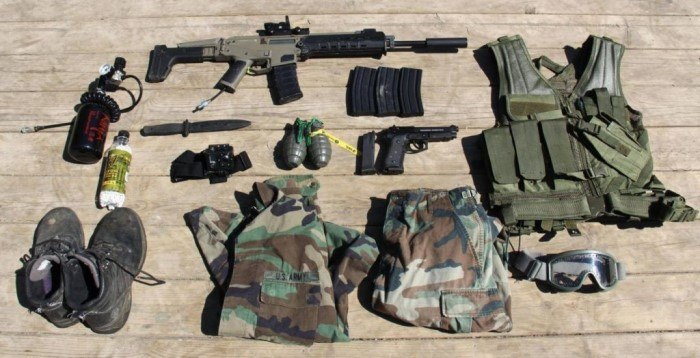

Você sabe o que é o Airsoft?
O Airsoft, também chamado de Softair, é um esporte de simulação de combate armado usados como treinamento policial, treinamento militar ou esporte recreativo, começou a ganhar força no Brasil em 2003. Geralmente o esporte é praticado no modo "Live Action" em locais abertos e de características semelhantes às reais.
Equipe Apache Airsoft
Depois de alguns jogos organizados pela Fabe Bsb, vimos a necessidade de criar nossa equipe, no intuito de temos uma equipe família dentro desse espote magnífico.
Fundada pelos membros Henque 01 e Abilio 02 em 02/02/2018 nasce então a equipe Apache Airsoft Bsb.
Equipamentos usados nos jogos
No airsoft, jogamos com simulacros de armas reais, mas que são de pressão que disparam bolinhas de plástico (bbs) de 6 mm de diâmetro.
O único equipamento de segurança obrigatório no airsoft é o óculos de proteção. Os demais, como fardas, balaclavas, capacetes e coletes, são opcionais, mas são muito convenientes para proteger o corpo durante o jogo.
Modalidades de Jogo
Existem várias modalidades de jogos, as mais conhecidas e utilizadas sáo S.A.R e Milsim
MilSim, uma abreviação de simulação militar, refere-se à simulação ao vivo de cenários de conflito armado conduzidos por civis para fins de entretenimento, esportes ou nostálgicos. Foi descrito como uma forma de "esporte radical" e como uma reconstituição histórica. Milsim Regras
Já o S.A.R (Simulação de Ação Real). Alguns eventos são realizados nessa modalidade de jogo.
Caso tenha interesse faça o download do Manual de Regras S.A.R do Distrito Federal/DF onde foi produzido por uma comissão de vários estados juntos, formando assim um conteúdo único e completo para a modalidade!